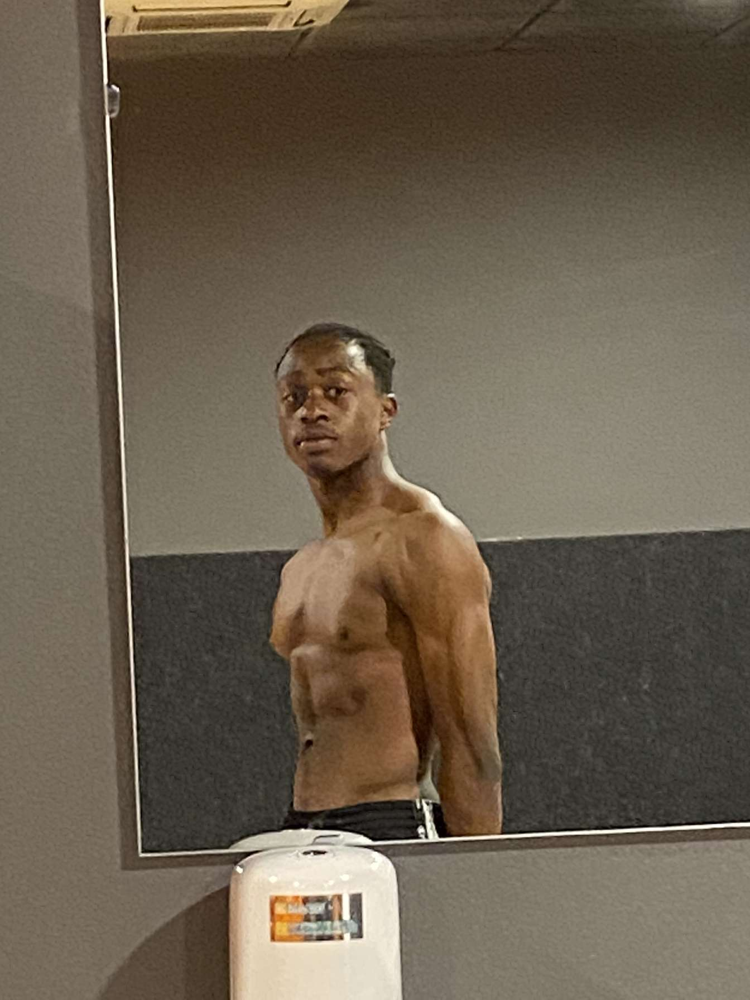
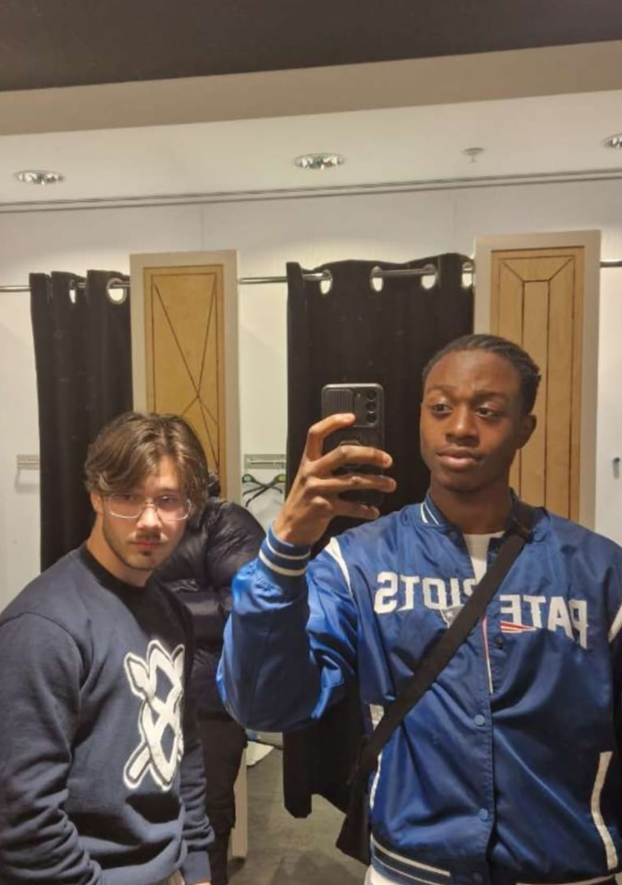

Ik ben een echte sportliefhebber! Voetbal is een van mijn grootste passies, en ik besteed graag tijd aan het kijken naar wedstrijden of zelf op het veld staan. Daarnaast ga ik regelmatig naar de fitness om fit te blijven en aan mijn kracht te werken. Hoewel ik in België ben geboren en opgegroeid, heb ik ook sterke roots in Togo, waar mijn ouders vandaan komen. Deze mix van culturen heeft me gevormd tot wie ik ben, en ik ben trots op beide achtergronden.
Home
Welkom bij mijn site.


Voordelen
"Werken biedt veel voordelen voor mij. Het geeft me de kans om nieuwe vaardigheden te ontwikkelen en mezelf te blijven verbeteren. Ik geniet van het samenwerken in een team, omdat ik geloof dat je van anderen kunt leren en samen sterker staat. Bovendien vind ik het belangrijk om financieel onafhankelijk te zijn, en werk draagt daaraan bij.
Nadelen
Aan de andere kant zijn er ook enkele nadelen. Soms kan de werkdruk hoog zijn, vooral wanneer deadlines strak zijn. Ook kan het een uitdaging zijn om een goede balans te vinden tussen werk en privéleven, vooral in drukke periodes. Maar ik geloof dat ik deze nadelen goed kan beheren door mijn tijd goed te plannen en prioriteiten te stellen."